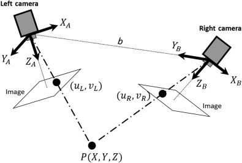

To preserve real-time compatibility and avoid external hardware bottlenecks, all computer vision and estimation algorithms were developed and executed directly within the TwinCAT PLC environment.
Stereo vision algorithms were implemented to process position of four LED targets mounted on the Xplanar mover. The positions from both cameras and the rotation matrix from the camera calibration yields the 3D positions of each LED target using triangulation. This information can then be used to calculate the 6D position of the XPlanar mover.
Image processing was performed using the TwinCAT vision library including thresholding, blob detection and contour detection. Blurring and image filtng were also used to reduce noise and improve detection accuracy.

Figure 1: Stereovision Diagram.